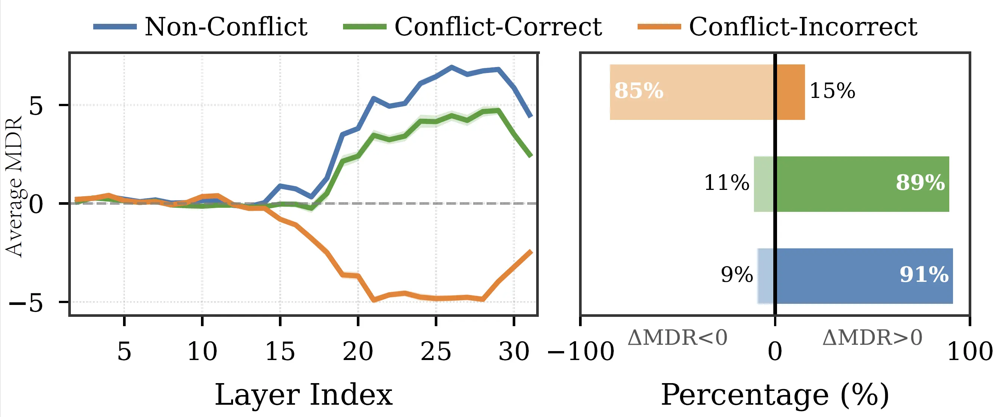
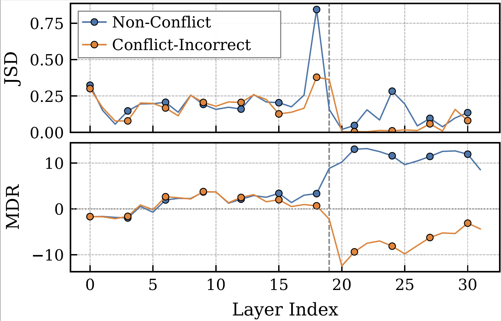
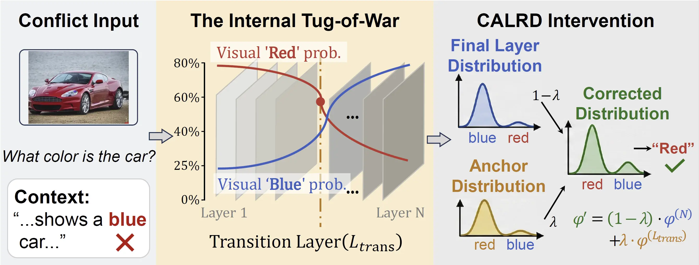
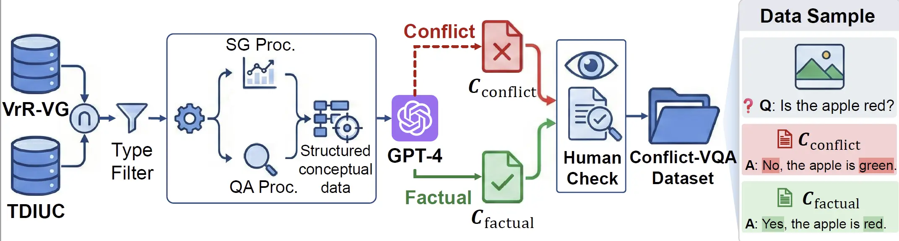
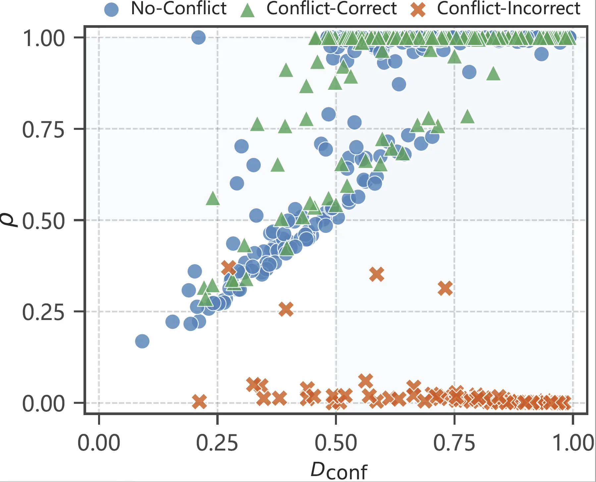

Layer-Wise Conflict Diagnosis
Introduces Modal Dominance Ratio (MDR) to trace visual-versus-textual preference across model depth and identify late-layer textual override as a characteristic failure pattern.
CALRD pinpoints the layer where confident visual predictions get overwritten by text, then restores that signal at inference time without training.
When vision contradicts text, multimodal large language models (MLLMs) consistently favor text, even when images provide clear evidence otherwise. This bias poses risks for applications requiring visual grounding, yet its cause remains unclear. In this paper, we uncover a surprising finding: models often get it right initially, forming correct vision-based predictions in their intermediate layers, before changing their minds and favoring text in the final output. We call this late-layer textual override. The visual information is encoded, it simply does not survive to the output.
More intriguingly, we find that how predictions change reveals whether they are correct: 85% of failures shift toward text, while 89% of successes shift toward vision. This directional signature enables a simple but powerful intervention: when we detect a confident visual prediction being suppressed, we restore it. We propose CALRD (Conflict-Aware Layer Reference Decoding), a training-free method that recovers overridden predictions at inference time. Experiments across five MLLMs of varying architectures demonstrate 4-9% absolute improvements on conflict benchmarks while maintaining standard performance, without training or external knowledge.
Failure cases shift toward text
Successful cases shift toward vision
Absolute gains on conflict tasks
MLLM families evaluated
Core contributions extracted from the paper introduction and method sections.
Introduces Modal Dominance Ratio (MDR) to trace visual-versus-textual preference across model depth and identify late-layer textual override as a characteristic failure pattern.
CALRD detects harmful override through anchor confidence and prediction retention, then adaptively restores transition-layer logits without external knowledge or finetuning.
Evaluates five MLLMs on Conflict-VQA and PhD-icc, with standard hallucination checks on POPE and CHAIR to verify that improvements do not degrade non-conflict behavior.
MLLM failures under conflict arise after visual evidence has already appeared in intermediate representations.


Failure cases often contain the correct visual answer in intermediate layers, then lose it as late layers move probability mass toward the text-suggested answer.
High transition-layer confidence plus low final-layer retention signals that a confident prediction was suppressed before output.
CALRD recovers what the model already knew but failed to preserve.

After the stability onset, CALRD locates the adjacent-layer distributional shift with maximum Jensen-Shannon divergence.
Anchor confidence measures the transition-layer top prediction; prediction retention measures whether that prediction survives to the final layer.
The intervention strength is lambda = Dconf x (1 - rho), so confident predictions are restored only when they are being suppressed.
Adjusted logits: phi' = (1 - lambda) phi(final) + lambda phi(transition)
When retention is high, lambda stays near zero and CALRD leaves the model output largely unchanged.
A diagnostic benchmark with explicit visual and textual answer annotations for mechanistic analysis.

| Model | Competent subset |
|---|---|
| InstructBLIP | 2,017 |
| LLaVA-1.5 | 1,212 |
| LLaVA-1.6 | 2,506 |
| Qwen2.5-VL | 3,940 |
| Qwen3-VL | 5,252 |
CALRD improves conflict resolution across model families and decoding strategies while maintaining standard performance.
Absolute accuracy gains across five MLLMs.
LLaVA-1.5 greedy accuracy rises from 27.72 to 36.35.
InstructBLIP greedy CI drops from 23.7 to 14.6.
| Model | Conflict-VQA Acc. | PhD-icc Acc. | ||
|---|---|---|---|---|
| Vanilla | CALRD | Vanilla | CALRD | |
| InstructBLIP | 39.61 | 44.12 (+4.5) | 41.08 | 49.62 (+8.5) |
| LLaVA-1.5 | 36.20 | 41.90 (+5.7) | 27.72 | 36.35 (+8.6) |
| LLaVA-1.6 | 42.35 | 49.51 (+7.2) | 28.23 | 36.52 (+8.3) |
| Qwen2.5-VL | 65.61 | 70.15 (+4.5) | 51.30 | 56.20 (+4.9) |
| Qwen3-VL | 75.58 | 77.42 (+1.8) | 60.32 | 63.68 (+3.4) |
Numbers are extracted from the paper's Table 1. Parentheses show absolute improvement over vanilla greedy decoding.

| Configuration | C-VQA | POPE |
|---|---|---|
| Vanilla | 42.3 | 85.4 |
| CALRD Full | 49.5 | 88.2 |
| w/o Dconf | 47.3 | 87.5 |
| w/o rho | 45.1 | 86.6 |
| Fixed layer | 45.9 | 87.1 |
Both detection signals and dynamic transition-layer selection contribute to the improvement.
Representative visualizations used in the project page.
National University of Defense Technology

National University of Defense Technology
National University of Defense Technology
National University of Defense Technology

National University of Defense Technology

The Chinese University of Hong Kong, Shenzhen

Intelligent Game and Decision Lab
CorrespondingFor questions about CALRD or multimodal knowledge conflict analysis, please contact the corresponding author.
Please cite the paper if CALRD is useful for your research.
@inproceedings{li2026calrd,
title = {MLLMs Get It Right, Then Get It Wrong: Tracing and
Correcting Late-Layer Textual Bias},
author = {Li, Xingming and Cheng, Ao and Sun, Qiyao and He, Xixiang
and Ji, Xuanyu and Huang, Runke and Hu, Qingyong},
booktitle = {Proceedings of the Thirty-Fifth International Joint
Conference on Artificial Intelligence},
year = {2026},
note = {IJCAI-ECAI 2026}
}